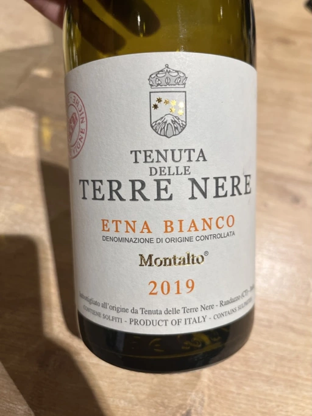
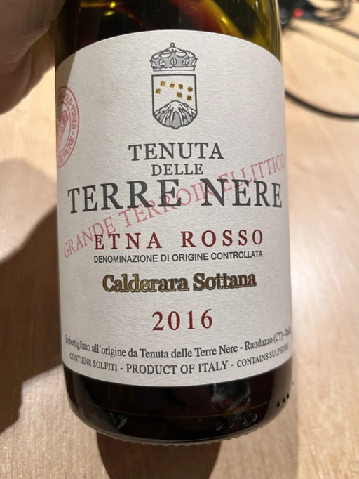
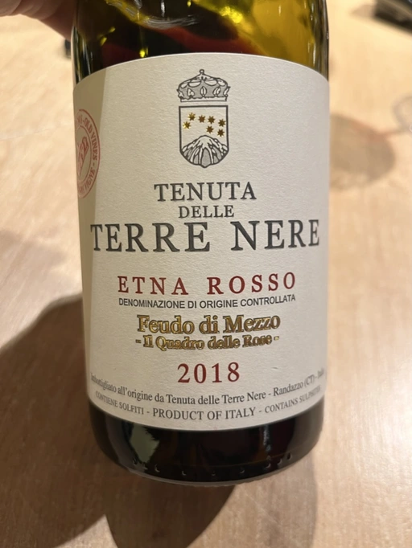
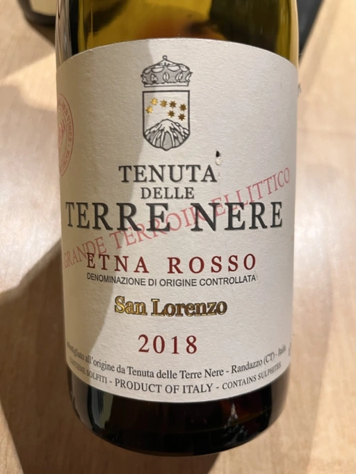
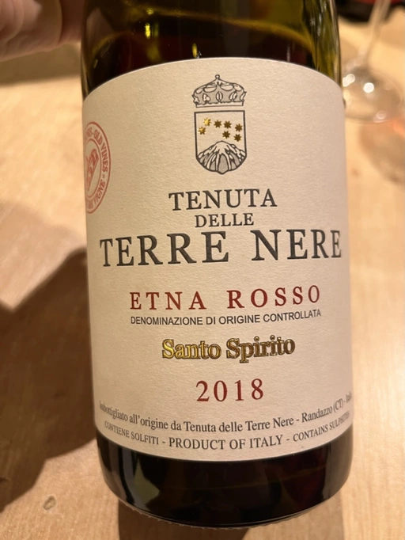

Tenuta delle Terre Nere Updated on January 12, 2023 Wines  ★ 8.00 Etna Bianco Montalto - 2019  ★ 8.25 Etna Rosso Calderara Sottana - 2016  ★ 7.75 Etna Rosso Feudo di Mezzo Il Quadro delle Rose - 2018  ★ 8.25 Etna Rosso San Lorenzo - 2018  ★ 8.50 Etna Rosso Santo Spirito - 2018